02 / Industrial wind-farm SCADA
Designing control and reporting for a wind-farm SCADA platform
Monitoring, control and reporting screens for the people who run wind farms of around 130 turbines, plus the design system behind them.
Product designer and design system owner
- Industrial UX
- Design systems
- Data-dense UI
- Atomic design system
Case study
Different levels of a wind farm, different jobs
Industrial SCADA · Wind energy
NoteValues in the figures are illustrative examples from the design work, not real operational data.
The platform
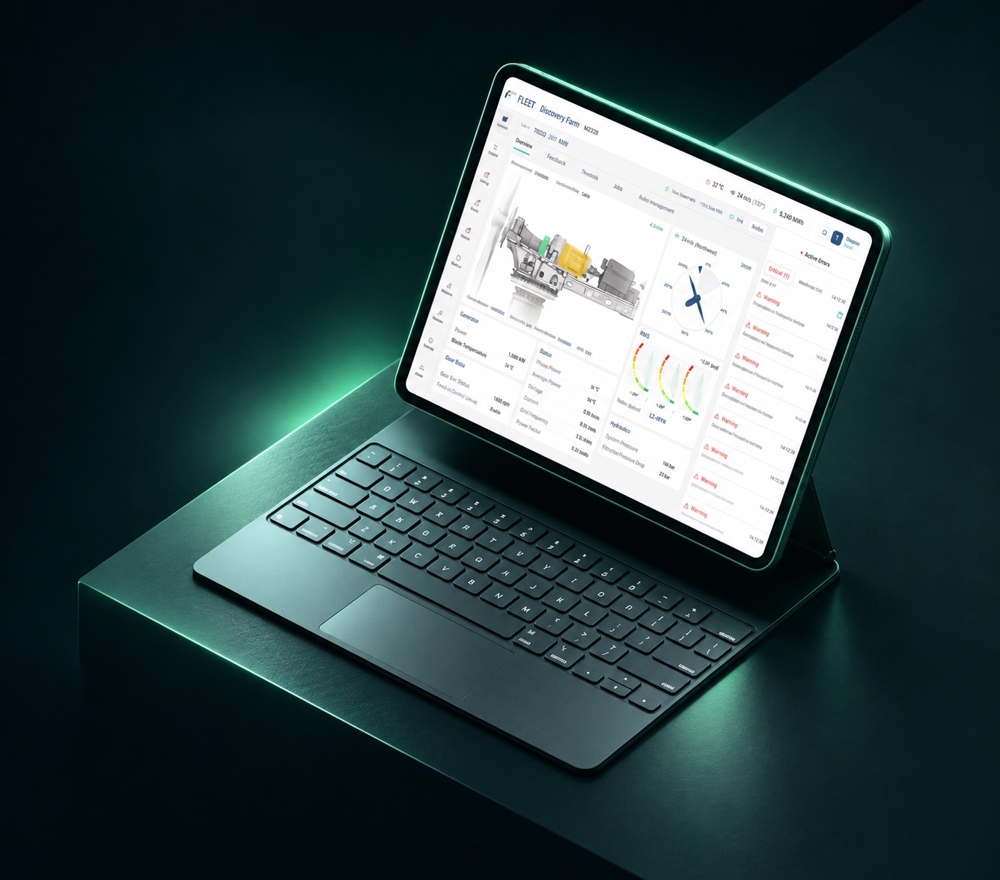
In short
In short
Wind-farm operators need to watch and command around 130 turbines at once. I designed the platform’s monitoring, control and reporting screens around one rule: each level of the farm gets only the controls and information that fit its scope.
- Role
- Product designer, design system owner
- Users
- Operators, admins, engineers, report reviewers
- Foundation
- Atomic design system
- Platform
- Industrial web SCADA
The problem
How do you let one operator command a whole wind farm, safely?
The platform covers live status for every turbine, commands for one turbine, a feeder or the whole park, user administration and a growing set of reports. Commands here are consequential, and the data is dense by nature.
Scale one control screen up to the whole farm and you hand operators buttons they should never press at that scope.
One operator, a whole farm
My role
Product designer and design system owner
I designed the operational screens, from the farm overview to turbine, feeder and park control, plus administration and the reports module. I also set up the design system the team works from: an atomic design system built on shadcn/ui, with Ropa Sans for headings and Roboto for data.
- ~130 turbines per farm
- 140 sensors, 60+ counters
- Consequential commands
- 10+ report types
Decision 1
Switch or compare without leaving the turbine.
When an operator is diagnosing one turbine, the next question is usually about another: is its neighbour behaving the same way? The usual route back to the farm overview and down again loses their place. I put a Switch control inside the turbine view instead. It opens the whole farm in place, with the same status filters, then either jumps straight to the chosen turbine or adds it to a side-by-side comparison with the metrics they pick.
Switch and compare, in motion
Decision 2
Each level gets only the controls it needs.
Instead of scaling one screen up or down, I gave each level its own job. The farm view answers “is anything wrong?”, the feeder view groups turbines the way the grid does, and the turbine view holds the detail. Detailed controls stay on the individual turbine; feeder and park get group commands only, with no pitch control and no reset.
From the farm down to one turbine
01 Farm02 Feeder03 Turbine
- 01 Farm
- 02 Feeder
- 03 Turbine
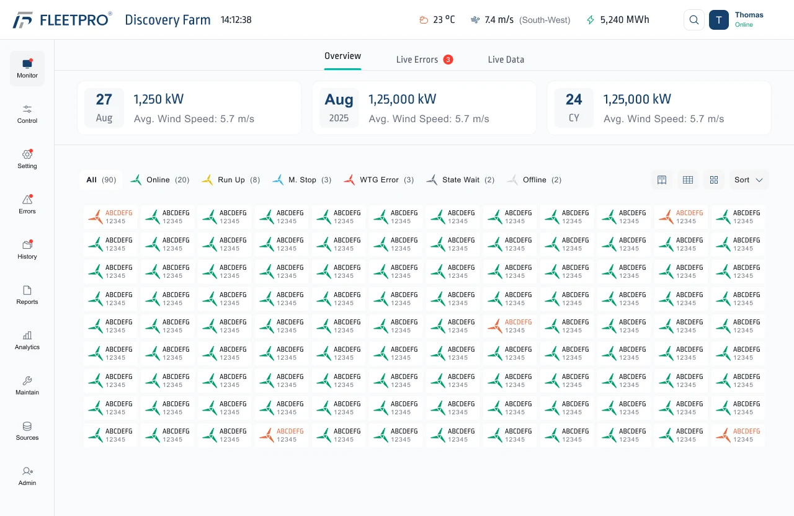
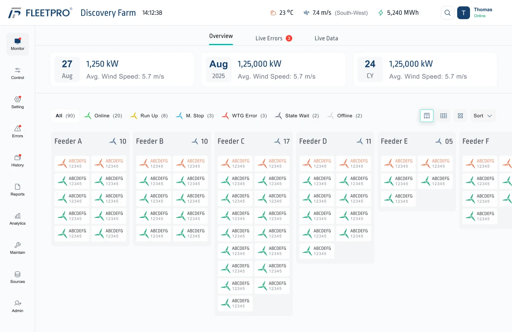
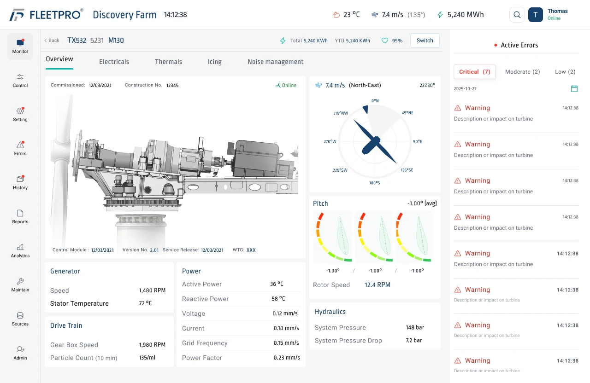
Decision 3
Status first, controls second.
Every list of turbines leads with status, with a filter and a count for each state, so an operator can isolate the turbines in error in one click. For group commands, a progress view shows how many turbines have responded and lists the ones that never got it. Turbine cards report status; they are not control surfaces.
Decision 4
Built for 140 sensors, not 14.
Engineering reports draw on about 140 sensors and 60+ counters, far too many for a dropdown. I designed a selection panel with search, categories and multi-select, and saved presets so recurring reports start from a known configuration instead of a blank list.
Power curve, with saved presets
Decision 5
Build every screen from one atomic system.
With dozens of dense screens and a team building in parallel, consistency could not depend on memory. I set up an atomic design system on shadcn/ui: atoms such as colour, type and icons; molecules such as buttons, inputs and cards; and organisms such as the navigation bar, side panel and user list. Every screen in this case study is assembled from it.
Atoms, molecules, organisms
- Atoms
Colour ramps
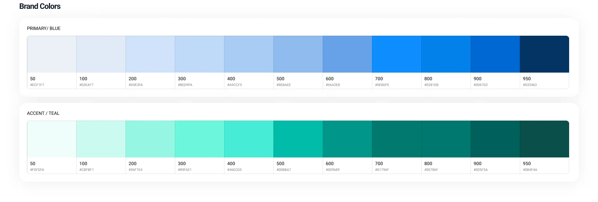
- Atoms
Two typefaces
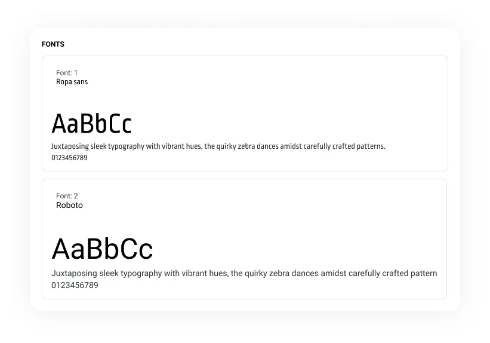
- Molecules
Buttons by size and hierarchy
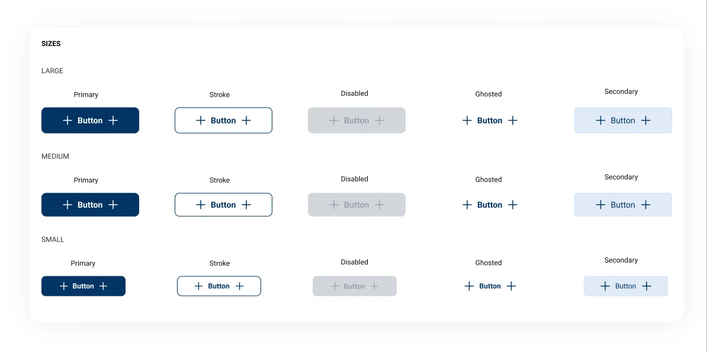
- Organisms
Toasts
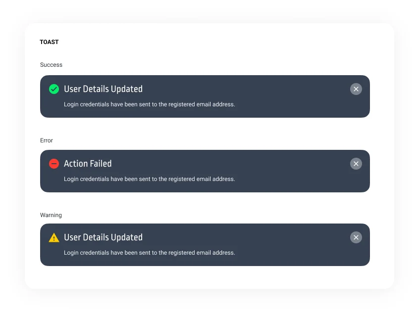
- Organisms
Confirmation modals
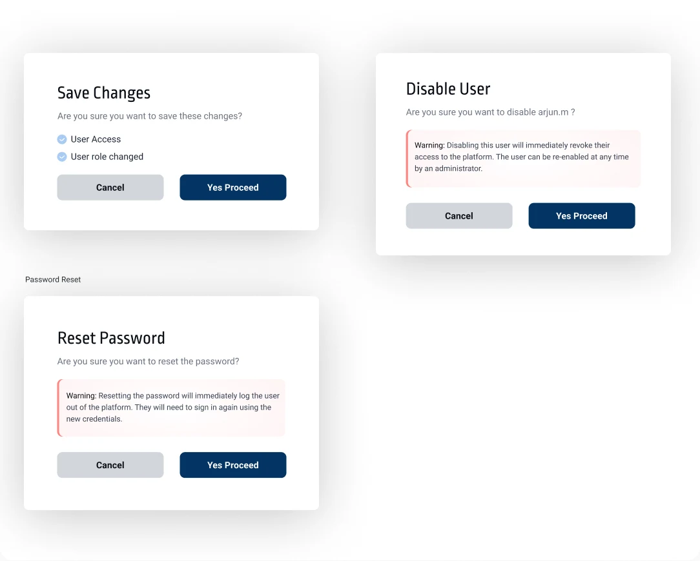
The solution
Scope decides the screen
Turbine, feeder and park each show what fits their job, status always comes before controls, and every screen is built from the same shared components.
Error dashboard
What I designed
What I designed
- 1Farm overview with live turbine status and errors.
- 2Individual turbine view, with switch and compare built in.
- 3Feeder control: group commands and turbine status.
- 4Park control: farm-wide commands and their progress.
- 5Administration: users, roles, enable and disable.
- 6A reports home built to grow past ten report types.
- 7Daily Generation Report workflow, from Not Created to Approved.
- 8Power curve analytics and the engineering report.
Takeaway
We didn’t add more controls. We put each one where it belongs.
Next project
More work
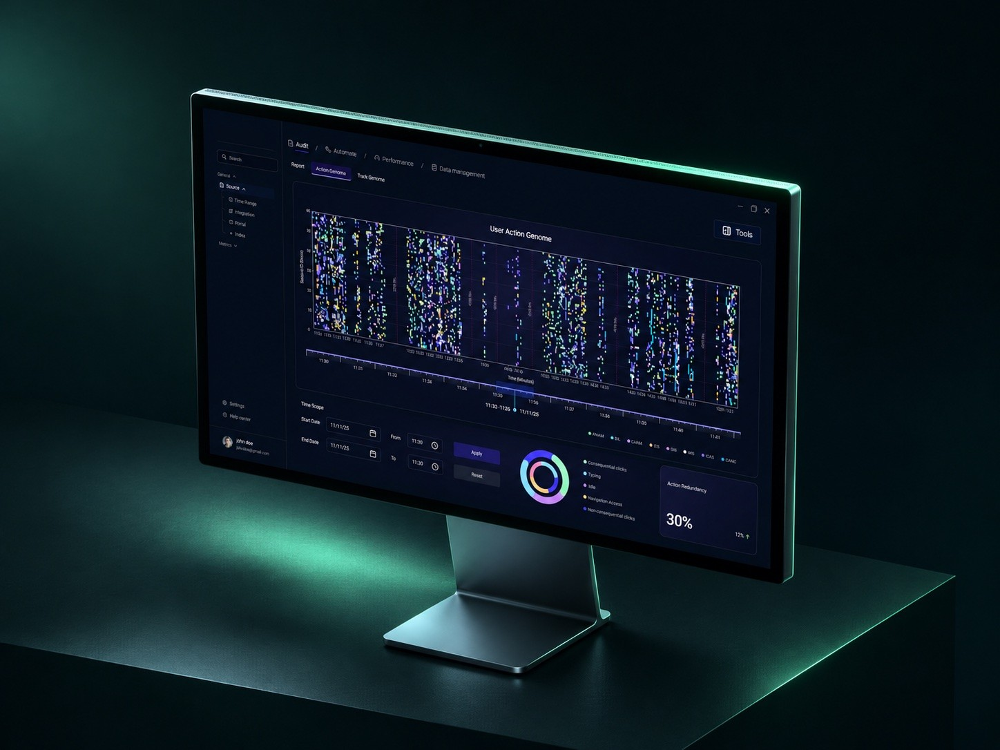
01View workSpatial Design for Enterprise AI Intelligence
Enterprise AI, spatial UI · Interface system designer
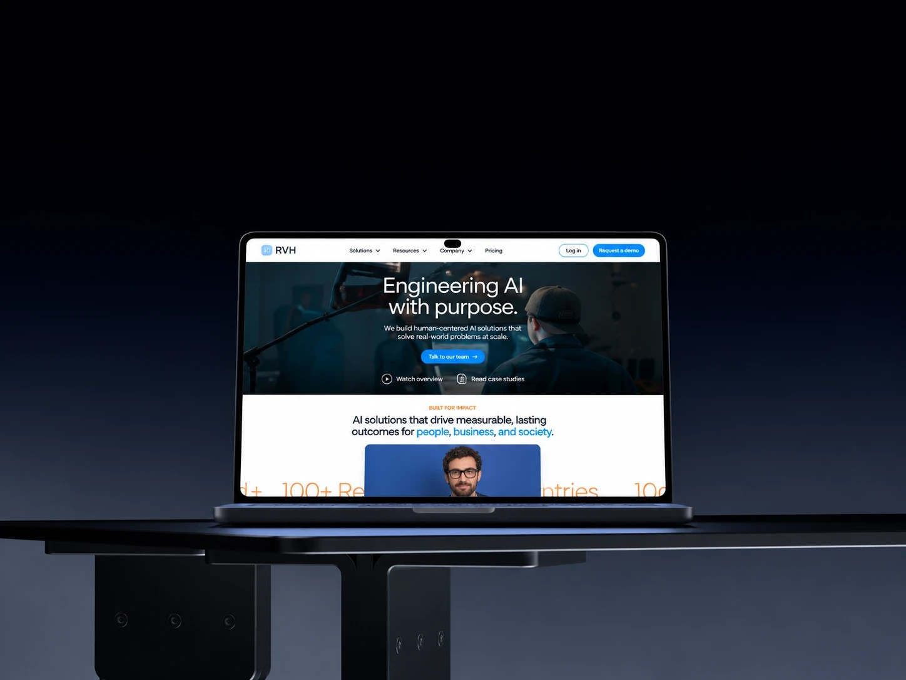
03View workBrand and website for an enterprise AI consultancy
Enterprise AI, brand and web · Designer
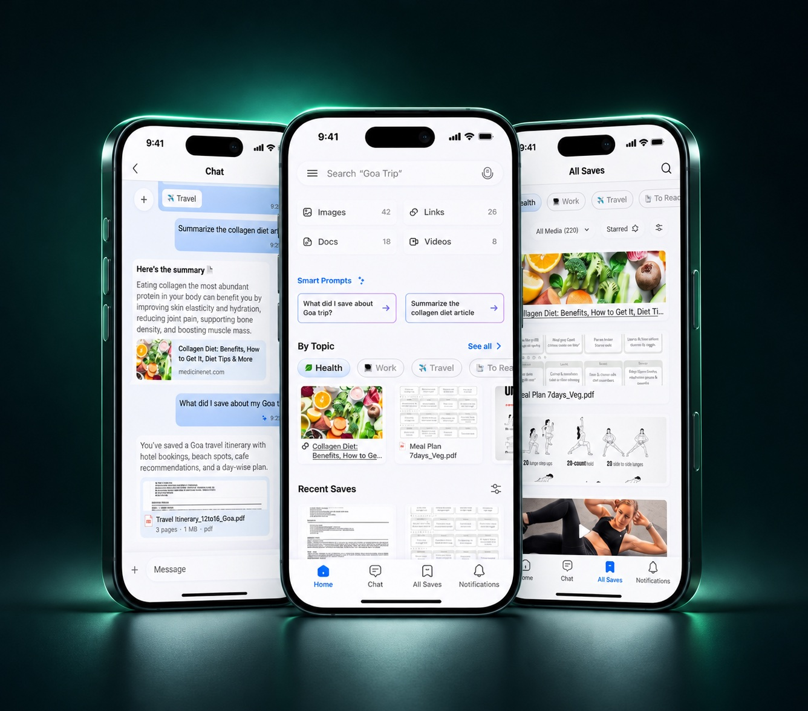
04View workA chat that remembers everything you save
AI knowledge app, iOS · Solo designer, end to end